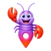

Test afgerond — goed gedaan Je bent sterk in: praktisch meedenken
✓ Hoe je werkt
Leuk
Sfeer
Waarden
Klaar voor de volgende test?
Je Kompas vult zich per test. Zo zie je meteen effect op passende banen.
Banen in de buurt
12 vacatures passen nu beter bij je
Was 47 op locatie alleen — nu ook op hoe je werkt.
Korte teaser; volledige uitleg staat in je Kompas na alle tests. PDF-paspoort zonder testtekst.
